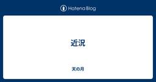
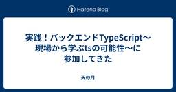
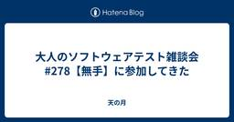
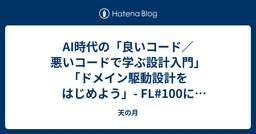

直近1週間の更新
7/18 (金)

近況  天の月
天の月
今日は本当にただの雑記なのですが、タイトルの通り近況報告をしていきます。 なんで突如近況報告をしようと思ったか 近況 今後 なんで突如近況報告をしようと思ったか 帰りの電車でふと会社のチャットを見て、今日ってスクラムフェス大阪だったのか・・・となったのがきっかけです。 公募制のスクラムフェスに関して昨年は基本的に全て現地に行っていて、一部の方には全部のスクラムフェスにいるよね！？と聞かれたりすることもあったのですが、本当に久しぶりにいかないスクラムフェスが出てきて、なんか後でふりかえったときにこの時期はこうだったんです、というのを喋りやすくしておきたいなあと思って言語化しておくことにしました。…
1日前
多くの外国人が「働きたい国」として注目“日本の魅力”の正体とは？  PTW／ポールトゥウィン【公式】
PTW／ポールトゥウィン【公式】
ポールトゥウィンのBPO（Business Process Outsourcing）事業を通じて蓄積してきた専門知識や業界ノウハウをもとに、担当者が業界の課題や動向、今後の展望をわかりやすく解説する「Knowledge Hub by PTW」。 これまで3回にわたり、外国人採用支援サービス「Stepjob（ステップジョブ）」事業の事業部長・行平澄子に日本の外国人採用市場の現状やStepjobのサービス内容について話を聞いてきました。今回の記事では視点を変えて、そもそも日本で働きたいと考える外国人は増えているのか、なぜ日本で働きたいのか、またどのような人が日本での就労を希望しているのかといった点に焦点を当て、外国人の方の事情や実態に迫ってみたいと思います。外国人採用を検討している企業の方にも、ぜひ参考にしていただければと思います。続きをみる
2日前
E2E自動テストの実行時間を半分にして開発者体験をアゲた話 7
7 Zennの「QA」のフィード
Zennの「QA」のフィード
はじめにこんにちは！マイベストのプロダクト開発部 イネーブリングチームでQAエンジニアをしているfukutomiです。最近特に理由もなく金髪にしたのですが、仲のいい同僚や上司から「治安が悪い」「自転車のハンドルめっちゃ曲げて乗ってそう」「ヤンキー（直球）」など絶賛をいただきました。ありがとうございます。さて今回は、リリース前に実行しているE2E自動テストを高速化して開発者体験をアゲた話です。よろしくお願いします。 これまでのE2E自動テストのフロー高速化の話をする前に、これまでのフローがどうなっていたかについて書いていきます。 実行フロー従来の実行フロー すべて直...
2日前

試してみる価値はある効果的なブラックボックステスト方法  Ranorex Blog - UIテスト自動化ツール Ranorex
Ranorex Blog - UIテスト自動化ツール Ranorex
ユーザーはアプリケーションを使用するとき、状況に応じて柔軟に機能することを期待します。たとえば、ビジネスアナリストはExcelを開くとき、アプリケーションの内部で何が起こっているかを知らなくてもデータを操作できることを望 […]The post 試してみる価値はある効果的なブラックボックステスト方法 first appeared on UIテスト自動化ツール Ranorex.
2日前
7/17 (木)

実践！バックエンドTypeScript〜現場から学ぶtsの可能性〜に参加してきた 天の月
https://findy.connpass.com/event/360678/ こちらのイベントに参加してきたので、会の様子と感想を書いていこうと思います。 会の概要 会の様子 安定した基盤システムのためのライブラリ選定 新卒エンジニアがフルスタックTS環境で開発してみた話 読書会から始める関数型ドメインモデリング Scaling Fast with confidence 会全体を通した感想 会の概要 以下、イベントページから引用です。 バックエンドでのTypeScriptの利用が注目されている中、国内で実際に採用している企業のナレッジは未だ少ない状況かと存じます。 そこで今回はバックエンド…
2日前
ソフトウエアテスト手法に学ぶ！UI Designで使える図表5選 1 ソフトウェアテストタグが付けられた新着記事 - Qiita
ソフトウェアテストタグが付けられた新着記事 - Qiita
はじめまして！WHIでUI/UX デザイナーをやっております、バナです。2025年6月に入社しました。なんと WHI は中途入社であっても2か月の豪華オンボーディング研修があり、今は研修の真っ最中です。オンボーディング研修についてはぜひこちらの記事をご覧ください！WH...
2日前
テストを自動化する#3｜Playwrightのサンプルコード | .waitForTimeoutの活用など Zennの「QA」のフィード
Playwrightでのテスト自動化に使えるJavascriptのサンプルコードです。 今回取り上げている内容!〇秒待機するコード（.waitForTimeout）URLから文字列を取得して、他のURLに埋め込んで開きたい 〇秒待機するコード（.waitForTimeout）〇秒待機する.waitForTimeoutのコードです。実際には、クリックした後画面遷移が完全に完了するまで「〇秒待機して、その後に△△を確認する」 というような形で使用するのが便利かと思います。await page.waitForTimeout(5000); // 5秒待機const ...
2日前
AIによる手動QAの自動化：食べログQAチームの挑戦、その第一歩 138 QA - Tabelog Tech Blog
QA - Tabelog Tech Blog
はじめに こんにちは。食べログの品質管理部で飲食店QCチームのチームリーダーを務める助川です。 みなさんは「AIで手動QA業務の自動化」と聞いて、どんなイメージを持ちますか？ 「現場で本当に使えるの？」「ナレッジや運用が大変そう…」そんな声も聞こえてきそうです。 私たちも同じような課題を抱えていました。本記事では、食べログのQA現場でAIによる手動QAの自動化に挑戦している取り組みの途中経過と、その中で得た学び・工夫・今後の展望をお伝えします。 品質管理部のAI活用の目標 品質管理部では、食べログの重要プロジェクトである予約や食べログノート、インバウンドなどの案件のQAを担当しています。 食べ…
3日前

AIで自動テストのプロセスを自動化する Zennの「Test」のフィード
このツールのgithubリポジトリはコチラ上記はJaSST nano vol,50での発表スライドです。この記事は、当日お話しした内容を補完する内容の記事です。 1. QA現場の課題感 & テスト自動化ツールを作ったきっかけ私はQAの仕事の中でも、“バグを探索するためのテスト”やプロセス改善といった予防的なQA活動にクリエイティブな楽しさを見出し、そこにこの仕事の魅力を感じています。一方で、決まった入力で分かりきった期待値を出す “チェック作業”――“ クネビンフレームワーク”でいうところの 『明確』 ばかり繰り返すのは、正直あまり楽しくないんです。（もう完全に個...
3日前
7/16 (水)

Webバックエンドの複雑さと負のスパイラル Zennの「Test」のフィード
Webバックエンドの 複雑さ（構成要素） とそれらを軽視した場合のビジネスリスクをまとめました。まずは以下の図を見て下さい。これは 「品質の低いリリース」 を起点としてチームやプロダクトにどのような悪影響が発生するかを図にしたものです。悪影響は連鎖し究極的には最下部の 「ビジネスの失敗」に繋がる可能性があることを図示しています。数年以上システム開発に関わった事がある方であれば、矢印を辿ってみると心当たりのある事象に行き着くかと思います。「品質の低いリリース」から連鎖的に発生する悪影響の図特に注意したいのが、以下の赤線です。この線によりこの図は循環しています。これは「品質の...
3日前

Mock Service Workerを導入してフロントエンド開発を効率化 Zennの「Test」のフィード
Mock Service WorkerとはMock Service Workerは、APIリクエストをキャッチしてモックデータを返してくれるライブラリです。ブラウザ環境ではService Workerを使います。実際のAPIを呼び出しているかのように動作するので、本番環境に近い形で開発ができます。https://mswjs.io/ Mock Service Workerの特徴本物のAPIリクエストと同じ形式でモックレスポンスが返るので、実際のAPIを使っているような感覚で、開発やブラウザでの動作確認が行えます。ブラウザでは、Service Workerを使ってリクエス...
3日前
【第9回】発想を促すヒント｜実務三年目からの発見力と仮説力  品質 | Sqripts
品質 | Sqripts
帰納的な推論 と 発見的な推論(アブダクション) は、私たちがソフトウェア開発の現場/実務で（知らず知らずにでも）駆使している思考の形です（それどころか日々の暮らしでも使っています）。 それほど“自然な”思考の形ですが、...The post 【第9回】発想を促すヒント｜実務三年目からの発見力と仮説力 first appeared on Sqripts.
4日前

大人のソフトウェアテスト雑談会 #278【無手】に参加してきた 天の月
ost-zatu.connpass.com 今週もテストの街葛飾に行ってきたので、会の様子と感想を書いていこうと思います。 外部アセスメント スクラムフェス大阪 虫 開発者体験が良さそうな企業ランキング 睡眠検定 全体を通した感想 外部アセスメント (途中から入ってあんまり話のコンテキストがわかっていなかったのでふわっと書いています) とある会社が面接とかをしている際に、外部アセスメントを導入しているという話があったのですが、この外部アセスメントってどれだけ妥当性があるものなんだろうか？という話が出ていました。 スクラムフェス大阪 スクラムフェス大阪のセッションに関して話をしていきました。 コ…
4日前

パフォーマンステストの戦略ガイド：Grafana k6による実践と自動化 1 Zennの「Test」のフィード
■はじめにWebサイトやアプリケーションのパフォーマンスは、ユーザーエクスペリエンス、ひいてはビジネスの成功を左右する生命線です。パフォーマンスの低下は、ユーザーの離脱やコンバージョン率の悪化に直結します。この課題に対し、開発の早期段階から継続的にテストを組み込む「シフトレフト」のアプローチが不可欠です。このアプローチでは、開発者自身がパフォーマンスへの責任を持ちます。Grafana k6のようなモダンなテストツールは、このシフトを強力に支援します。JavaScriptでテストを記述でき、CI/CDパイプラインへも容易に統合可能です。効果的なテストの鍵は、明確な目標設定にあり...
4日前
7/15 (火)
スクラム祭りの打ち合わせ(45回目)をしてきた 天の月
aki-m.hatenadiary.com こちらの打ち合わせをしてきたので、会の様子と感想を書いていこうと思います。 ホームページの更新 メールの返信 スポンサーチェック Keynote Speakerの紹介文 ホームページの更新 ホームページから飛べるXP祭りへのリンクが古いものではないか？というコメントがあり、確かめてみたところその通りだったので修正をしていきました。 また、ちょうどロゴが一つ届いていたので、そちらを掲載していったのですが、相変わらずWixのご機嫌が悪く、モバイルがあんまりうまくいかなくて、少し時間を使うことになりました。 加えて、jpgからsvgへの変換があまりうまくい…
4日前

pytest で Allure を使って AAA スタイルを書きやすくする Zennの「Test」のフィード
はじめにpytest および Allure のインストール方法や基本的な使い方については、本記事には記載しません。 Arrange-Act-Assert スタイルでテストを書きたいArrange-Act-Assert (AAA) スタイルは、テストコードを読みやすく、理解しやすくするための一般的なテストの記述パターンです。以下の例のように、テストコード内に# Arrange: add items to shopping cartなどと「この部分で準備してますよ」とコメントで表現したりします。書かないよりは、書いた方が良いけど、より「ここからここまでが準備」などがわかりやすく書...
4日前

ソフトウェア開発における「スタブ」の起源と普及 Zennの「Test」のフィード
要約スタブ（stub）とは、ソフトウェア開発で未完成のモジュールの代わりに使われる簡易な部品のことです。1970年代初頭、IBMの技術者Harlan D. Mills（ハーラン・ミルズ）がトップダウン開発の中で初めて採用し、下位モジュールの「切り株」が上位モジュールの成長を支えるように、システム全体の構築を助ける役割を担うことから生まれました。その後、テストや分散システムなど多くの場面で活用され、今では幅広い開発現場で利用されています。 スタブって何？スタブとは、「ダミー実装」とも呼ばれるもので、実際の機能がまだ完成していない部分に代わって、あらかじめ決められた結果を返...
4日前

【Test】さっと使えてコピペもできるテスト用テキストデータ早見集 Zennの「Test」のフィード
はじめに 対象毎回、テストデータを用意するのが面倒な方向け。Webアプリケーションの手動テスト向け。<select>や<input type="checkbox">などの候補は、手動入力のため除外。 動機毎回、「あいうえおかきくけこ……」と打つのは面倒ですし。自分で記事を書いてブックマークしておけば、ググらずともAIに生成してもらわずとも、コピペで済ませられるかなと。 テストデータ早見集 メールアドレスMailHog などのローカル環境用メールサーバーが設定されている前提。test01@example.comtes...
5日前
ローコード自動化ツール「mabl」#4 ～使ってみた所感～確認内容に日時が関係する場合の実装方法 品質 | Sqripts
テストエンジニアのマッツーです。 前回の記事ではテスト自動化における「アサーション」の機能や活用方法について操作方法や所感をお伝えしました。 今回はテスト自動化において確認内容に日時が関係するような場合の実装方法について...The post ローコード自動化ツール「mabl」#4 ～使ってみた所感～確認内容に日時が関係する場合の実装方法 first appeared on Sqripts.
5日前
Connection to time.windows.com failed エラーの対応方法 Ranorex Blog - UIテスト自動化ツール Ranorex
Ranorex 年間ライセンス、特にオンラインサービスは、ライセンスチェックのために正確なシステム時刻に依存しており、マシンがtime.windows.comのような信頼できるタイムサーバーと同期できない場合、問題が発生 […]The post Connection to time.windows.com failed エラーの対応方法 first appeared on UIテスト自動化ツール Ranorex.
5日前
ProService Talent Book vol.7「私たちは“自分たちの仕事をなくす”ために働いている──再現性と自走支援の思想」 Autify
Autify ProServiceで働くプロフェッショナルにスポットライトを当てる「ProService Talent Book」。第七弾では、Quality Engineeringチームのマネージャーとして、メンバーのサポートやチームビルディングに取り組みながら、自身もプレイヤーとして顧客の品質課題に伴走し続ける佐藤德尚さんにインタビューしました。幅広い現場を経験してきた彼が語るのは、品質の本質、そしてAI時代におけるQAの新たな在り方。長年の経験に裏打ちされた言葉の端々から、これからの時代を生き抜くヒントが見えてきます。続きをみる
5日前
7/14 (月)

AI時代の「良いコード／悪いコードで学ぶ設計入門」「ドメイン駆動設計をはじめよう」- FL#100に参加してきた 天の月
forkwell.connpass.com こちらのイベントに参加してきたので、会の様子と感想を書いていこうと思います。 会の概要 会の様子 AI時代の『ドメイン駆動設計をはじめよう』 AI時代の『改訂新版 良いコード／悪いコードで学ぶ設計入門』 パネルディスカッション 講演の感想 AIは設計のコストを下げているか？ 簡略で済ませるべきところにAIが出たことで設計が変わってくるのか？ バグサーチャーは変更容易性に特化しているのか？ 20代をどう過ごしたのか？ 30代をどう過ごしたのか？ 本をどう使っているか？ 40代以降をどう過ごしたのか？ AIがコードを生成するのが当たり前の時代でエンジニア…
5日前

退屈なことはAIにやらせよう（ミューテーションテスト編） Zennの「Test」のフィード
はじめに株式会社COMPASSでシステムエンジニアをやっている笹島です。進化し続けるAIエージェントを用いて日々の開発は楽に、その分プロダクトの競争も激しくなっていきます。そんな中自信を持ってプロダクトを世に送り届けていくには、開発者側も自信を持ってプロダクトに品質を作り込んでいきたいものです。ということで今回はAIエージェントを用いた品質担保の施策として、ミューテーションテストとAIエージェントを組み合わせた「テストパターン自動追加」の取り組みを共有します。!この記事はこんな方におすすめ自動テストに関心がある開発者実務でAIエージェントを活用する方法を探している人...
5日前
LLM品質Night — Algomatic・PharmaX に学ぶAIプロダクト品質の真髄 — イベントレポート Zennの「QA」のフィード
こんにちは！DAIJOBU 代表の山中です。今回は 2025 年 7 月 1 日に開催したオフラインイベント「LLM 品質 Night — Algomatic・PharmaX に学ぶ AI プロダクト品質の真髄 —」 のレポートをお届けします！https://connpass.com/event/359656/ ⏰️当日のタイムテーブル 発表内容今回の登壇者と発表資料です。 「良さそう」と「とても良い」の間には 「良さそうだがホンマか」がたくさんある株式会社Algomatic AI/MLエンジニア 宮脇 峻平さん （@catshun_）LLM が生成物を出...
6日前

絶対に落とせない導線を守るフロントエンドテストを1か月で構築した話 28
Zennの「Test」のフィード
はじめにこんにちは。カナリーでテクニカルリードエンジニアをしている @react_nextjs です。私たちは 【もっといい「当たり前」をつくる】 をミッションに掲げている不動産テックカンパニーです。弊社では、現在下記のプロダクトを運用しています。「CANARY」: BtoC のお部屋探しマーケットプレイス（アプリ/Web）「CANARY Cloud」: BtoB SaaS（不動産の仲介会社様向けの顧客管理システム）本記事では、わずか1か月で「絶対に落とせない」フロントエンドテスト基盤を構築したプロセスと具体策を共有します。 背景 / 課題「CANARY」は、全国...
6日前